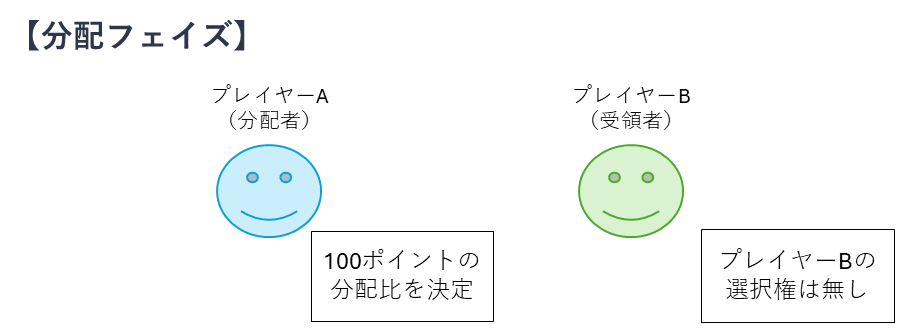
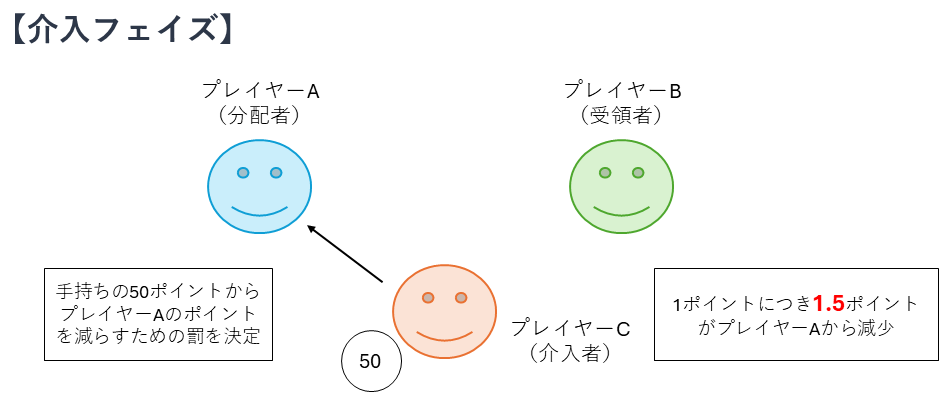

この課題では、あなたと他のオンライン参加者2人の計3人（プレイヤーA、プレイヤーB、プレイヤーC）で構成されるグループで、ポイントの分配と罰に関する意思決定ゲームを行います。あなたの役割は「プレイヤーC（介入者）」です。
ゲームは【分配フェイズ】と【介入フェイズ】の2段階で構成されています。
プレイヤーA（分配者）は、最初に渡された100ポイントを、自分とプレイヤーB（受領者）の間でどのように分けるかを決定します。プレイヤーB（受領者）はポイントを受け取るだけで、選択権はありません。

プレイヤーC（介入者：あなた）であるあなたには、毎試行手元に50ポイントが支給されます。プレイヤーA（分配者）の分配内容を確認したのち、プレイヤーAに「罰」を与えるために自己のポイントを投資するかどうかを決定してください。
あなたが罰に1ポイントを投資するごとに、プレイヤーA（分配者）のポイントは 1.5ポイント減少 します。
（例：50ポイントすべてを投資した場合、プレイヤーAは75ポイント失います）

※ゲームは全部で【8回（8試行）】繰り返されます。
Next Trial
準備ができたら、下のボタンを押してゲームを開始してください。
上記の内容を確認したら、下のボタンを押してあなたの行動決定（介入フェイズ）へ進んでください。
プレイヤーAを罰するために、あなたの手持ち（50pt）から何ポイント投資しますか？
ご協力ありがとうございました。データ送信を完了するまでそのままお待ちください。